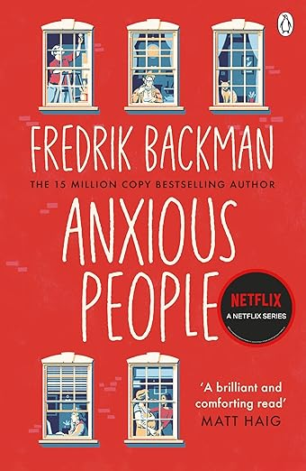

Anxious People
Abouth the author: Fredrik Backman is the #1 New York Times bestselling author of A Man Called Ove, My Grandmother Asked Me to Tell You She’s Sorry, Britt-Marie Was Here, Beartown, Us Against You, and two novellas, And Every Morning the Way Home Gets Longer and Longer and The Deal of a Lifetime, as well as one work of nonfiction, Things My Son Needs to Know About the World. His books are published in more than forty countries. His next novel, Anxious People, will be published in September 2020. He lives in Stockholm, Sweden, with his wife and two children.
Review: Backman has weaved a witty and beautiful narrative exploring human lives and the struggles everyone faces. The central theme of the book, the complexities of human emotions and relationships, is explored through flawed yet relatable characters. The ability to surprise and keep the readers guessing is one of the strengths of the novel. The author wrote it brilliantly, skillfully masking crucial information about the bank robber. The writing addresses the assumptions made by the characters as well as the readers, challenging the preconceived biases and notions. The characters are realistic with emotional depth, adding authenticity to the narrative. Every character has a story to tell which gets intricately entwined as the plot develops. The author has beautifully captured the essence of human connection and vulnerability. It is a poignant reminder that empathy and understanding can bridge gaps and heal wounds even in the most unexpected situations. Overall, this book offers both introspection and entertainment through clever storytelling, character-driven narrative and reflection on human connections.
Rating: ★★★★☆ (4/5)
Click here to view the book 